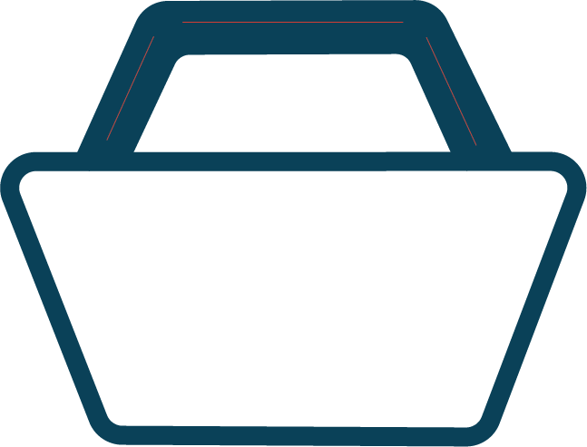
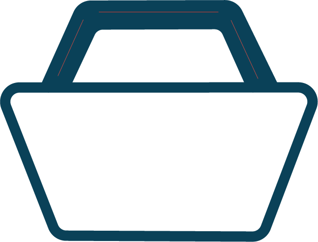

FAQ
Hvordan bestiller jeg en måltidskasse?
↓Hvordan opsiger jeg mit abonnement?
↓Du kan opsige dit abonnement ved at logge ind på din profil og gå til "Abonnement", hvor du finder muligheden for at opsige dit abonnement.
Alternativt kan du kontakte vores kundeservice for hjælp på mail: Nippon-info@gmail.com eller telefon: +45 37 82 46 91
Hvordan ændrer jeg min måltidskasse?
↓Du kan ændrer i din måltidskasse ved at bygge din egen måltidskasse, hvor du kan tilpasse og ændre din kasse efter dine præferencer. Du kan finde siden med byg-selv måltidskasser her.
Hvis du ønsker yderligere ændringer, kan du altid vende tilbage og ændre i din måltidskasse ved at klikke på "Rediger ordre" under din indkøbskurv.
Hvordan fungerer levering?
↓Vi leverer dine måltidskasser direkte til din dør, og vores levering sker regelmæssigt i efter til din valgte leveringsplan.
Når du har lavet en bestillig, modtager du en bekræftelse og sporingsoplysninger, så du nemt kan følge din levering.
Du kan desuden læse mere om hvordan det hele fungerer her.
I hvilket tidsrum leverer i?
↓Vores leveringstidspunkter varierer afhængigt af din placering.
Vi stræber efter at levere på et tidspunkt, der passer bedst til dig, og du har derfor mulighed for at vælge dit ønskede leveringstidspunkt, når du bestiller din måltidskasse.
Hvordan tilknytter jeg et betalingskort til min profil?
↓Du tilknytter et betalingskort til din profil ved at logge ind og gå til "Betalingsindstillinger" under "Din Konto", som du finder her.
Her kan du tilføje eller ændre dine betalingsoplysninger sikkert.
Hvordan sorterer jeg emballagen?
↓Vi opfordrer til bæredygtighed, og vores måltidskasse gør det nemt for dig.
Vi stræber efter at bruge genanvendelige materialer og støtter miljøvenlige initiativer, og du skal derfor blot sortere emballagen i overensstemmelse med de lokale genbrugsretningslinjer.
Du kan læse meget mere om vores bæredygtighed her på hjemmesiden.
Hvad gør jeg, hvis jeg modtager en dårlig vare?
↓Hvis du mødtager en dårlig vare, beder vi dig kontakte vores kundeservice og send gerne billeder af den modtagne vare. Herefter undersøger vi og træffer nødvendige foranstaltninger for at sikre din tilfredshed.
Du kan kontakte vores kundeservice på mail: Nippon-info@gmail.com eller telefon: +45 37 82 46 91
Hvad gør jeg, hvis der mangler en vare?
↓I tilfælde af manglende varer, bedes du kontakte vores kundeservice. Vi vil omgående tage hånd om sagen og sørge for at levere den manglende vare eller tilbyde en passende løsning.
Du kan kontakte vores kundeservice på mail: Nippon-info@gmail.com eller telefon: +45 37 82 46 91